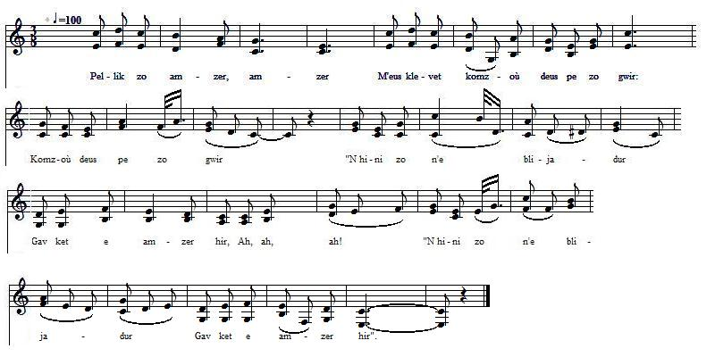

|
Les deux "Bonomik" La pièce qui suit, tirée du 1er carnet de Keransquer est intitulée par La Villemarqué "Bonomik". Il existe deux catégories de chants portant ce nom ou un nom apparenté dans le répertoire traditionnel de Basse-Bretagne. Le chant noté par La Villemarqué appartient à la première série. L'intrigue est la même que celle du chant vannetais publié par l'Abbé Cadic. Des répétition de mots dans le manuscrit de La Villemarqué (amzer - amzer, eurvad - eurvad) et les nombreuses terminaisons de vers par des groupes de trois syllabes ("pe zo gwir", "komañdiñ"...) semblent indiquer que les structures des deux chants pourraient être similaires. Les paroles de La Villemarqué ont été un peu changées pour les faire cadrer avec la mélodie de F. Cadic. L'intrigue Les considérations hédonistes qui occupent les 2 premières strophes, laissent supposer que le narrateur n'est pas étranger à l'écart de conduite commis par Jeannette, évoqué à la strophe 10 (*). Bien que ce chant cornouaillais se veuille facétieux - et c'est là un qualificatif que les commentateurs utilisent souvent à propos de la Cornouaille -, il en dit long sur la mentalité de toute une société qui faisait de la sexualité et de conception en dehors du mariage un exploit comique pour les hommes et un "torfed", un "crime" pour les femmes. On peut même supposer que l'acte de chair n'est pas mutuellement consenti, mais commis par le narrateur appelé à partir à la guerre, pour se venger d'avoir été éconduit! La version vannetaise recueillie par l'Abbé François Cadic (N°2 ci après) ne dit rien de l'origine, ni de la nature du mal subit qui frappe Jeannette. Les Vannetais avaient-ils plus de moralité que les Cornouaillais? Ou est-ce le brave abbé qui a édulcoré un texte qui sentait le souffre? (Sans doute pas, F. Cadic n'est pas connu pour avoir pris de telles libertés avec ses textes). Les deux dernières strophes de la version de La Villemarqué donnent le motif du refus de Bonhomme, en tout cas ceux que Jeannette crois deviner: la crainte d'une mésalliance et l'influence d'autres prétendants de plus haut rang. Selon Jeannette ces derniers sont désargentés et ils auront tôt fait de dilapider la dot. Bibliographie La bibliographie de ce chant, telle qu'elle est données dans "Aux Sources du Barzaz" par D. Laurent est la suivante: - Coll. Penguern, t. 90: Bonomik (Taulé, 1851) (= Gwerin. 6) - Luzel, "Sonioù I: Annaic ar Fichant. - Laterre, "Kanaouennoù Breizh Vihan": son ar Bonomik (Calanhel - Carhaix). - F. Cadic "Paroisse bretonne de Paris" 1904 (Gourin). - F. Vallée "Kroaz ar Vretoned, 9.9.1906: Ar bonomik (Plourac'h). |
The two "Bonomiks". The following piece is found in the first Keransquer copybook and was titled by La Villemarqué "Bonomik" (the Old Man). There are two kinds of songs that go by this name or a related one in the taditional repertoire of Lower Brittany: The song recorded by La Villemarqué belongs to the first category. The plot is the same as in the Vannes dialect song published by the Rev. François Cadic. Repeated words in the Keransquer MS (amzer - amzer, eurvad - eurvad) and several three syllable line endings ("pe zo gwir", "komañdiñ"...) apparently hint at similar structures in both songs. Slight changes were made in La Villemarqué's lyrics to make them scan F. Cadic's tune. The plot The hedonistic considerations to which the first two stanzas are dedicated suggest that the narrator was instrumental in Jenny's disdemeanour hinted at at stanza 10 (*). Although this song is meant to be a mischievous-humorous one, - as are, according to critics, many Cornouaille songs and tales -, it provides dismal insight into a whole society's frame of mind concerning sex and conception outside marriage: an exploit for a man, a "torfed" (crime!) for a woman. We may even assume that the intercourse was not mutually desired, but provoked by the narrator who was to leave to war, as a revenge for his rejection! The Vannes dialect version collected by the Rev. François Cadic (N°2 hereafter) says nothing about the origin or the nature of the disease by which Jenny is suddenly affected. Had people in the Vannes area higher moral standards than in the Quimper bishopric? Or did the worthy cleric "sanitize" these lyrics by removing improper passages? (It would be astonishing, since F. Cadic usually does not tamper with his texts); The last two stanzas in La Villemarqué's version disclose the reason of Bonomik's refusal, anyways as Jenny figures it out: he fears lest his daughter should marry beneath herself and is prompted to avert it by other suitors whom she supposes to be broke and likely to waste away her dowry very soon. Bibliography In the opposite column, are the biblibiographic data for this song as listed in Donatien Laurent's "Sources du Barzaz". |
|
BRETON (Version KLT) page 33 Bonomik 1. Pellik zo amzer, amzer M'eus klevet komzoù deus pe zo gwir: Komzoù deus pe zo gwir "N hini zo n'e blijadur Gav ket e amzer hir, ah, ah, ah! "N hini zo n'e blijadur Gav ket e amzer hir". 2. Mar ve me tall Janedik P'hini a garan, garan parfet P'hini garan parfet, Mar ve daou-tri de'ezh ennañ. Na ve naon na sec'hed, ah, ah, ah! Mar ve daou-tri de'ezh ennañ. Na ve naon na sec'hed. 3. - Eurvad, d'eoc'h Janedik! Eurvad, eurvad d'eoch a laran, Eurvad d'eoch a laran. Pelec'h ma aet Bonomik, Pa n'ema ket o toned amañ? Pelec'h ma aet Bonomik, N'eo ket o tont amañ? 4. - Setu eñ barzh al leurioù O c'holeiñ ar bernioù aed, C'holeiñ ar bernioù aed, Parlantit soublik dioutañ, C'hwi ne vec'h ket reüzet, ah, ah, ah! Parlantit soublik dioutañ, C'hwi ne vec'h ket reüzet! 5. - Eurvad, eurvad, Bolomik! Eurvad, eurvad d'eoch-hu a laran, Eurvad d'eoch a laran, Ho verc'h Janik da zimeiñ Diouzhoc'h a c'houlennan, ah, ah, ah! Ho verc'h Janik da zimeiñ Diouzhoc'h a c'houlennan. 6. - Janedik zo re yaouankik Evit ur bloavez pe zaou, pe zaou, Vit ur bloavez pe zaou, Re yaouankik zo Janedik Da konduiñ ti na konsev. Re yaouankik zo Janedik C'hoazh da gonsev. 7. - Me gemero ur plac'h didani Ha ne ray nemet komandiñ, Ne ray 'met komandiñ, Ur vagerez didani A zisko he vailhouriñ, ah, ah! Ur vagerez didani A zisko he vailhouriñ. 8. - Pasit hoc'h hent, den yaouank, Mar eo da Bariz a yaet, a yaet Mar da Bariz a yaet, D'an distro deuz ar brezel Ne vioc'h ket refuzet, ah, ah, ah! D'an distro deuz ar brezel Ne vioc'h ket refuzet. page 34 9. - Eurvad, eurvad, den yaouankik! Eurvad, d'eoc'h a laran, a laran Eurvad, d'eoc'h a laran, D'abaoe m'oc'h-hu bet em zi, Janik zo chomet klañv, ah, ah, ah! D'abaoe m'oc'h-hu bet em zi, Janik zo chomet klañv. 10. - Mar karec'h em reiñ din-me Pa 'm-eus he goulennet, goulennet Pa 'm-eus he goulennet! Graet he zorfed ganti bremañ (*) Rak evit honhont ned' on ket. He zorfet ganti bremañ E'it honhont ned' on ket. 11. - Eurvad, d'eoc'h-hu Janedik! Eurvad d'eoch a laran, a laran Eurvad d'eoch a laran. Ur bouch a wir garantez Diganeoc'h-hu a c'houlennan. Bouchik a wir garantez, Diganeoc'h 'c'houlennan. 12. - O c'hwi ne vec'h ket reüzet Evit ur bouchik na daou, na daou Vit ur bouchik na daou. Glac'har bras 'm'eus em c'halon Diboan n'eomp-ni priedoù, ah, ah, ah! Glac'har bras 'm'eus em c'halon, Diboan n'eomp-ni priedoù. 13. Serten dud zo er vro-mañ Ha n'int ket jamez er vad, er vad, N'int ket jamez er vad, Nemed atav gant an drouk Prezeg atav parlant war ar stad. Nemed atav gant an drouk Ha prezeg war ar stad. 14. Va madoù yelo gante Kent e vien a-barzh ar bed. Kent e vien barzh ar bed, Kaos int 'lakaat facheri Lec'h biskoazh na n'eus bet, ah, ah, ah! Kaos int 'lakaat facheri Lec'h biskoazh na n'eus bet. |
FRANCAIS page 33 Bonhomme 1. Comme on disait naguère, - Des propos empreints de vérité, Empreints de vérité - "Chercher ce qui peut plaire A chacun, ne saurait, ah, ah, ah! "Chercher ce qui peut plaire, Ne saurait ennuyer!" 2. Auprès de ma Jeannette J'avais filé le parfait amour, Oui, le parfait amour. La faim n'avait lieu d'être Ni la soif auprès d'elle, ah, ah, ah! Et pouvaient disparaître Pendant deux ou trois jours! 3. - O Jeannette si bonne, Je vous salue bien bas aujourd'hui Oui, bien bas aujourd'hui, Où donc est le Bonhomme? Je ne l'aperçois pas, ah, ah, ah! Où donc est le Bonhomme? N'est-il point par ici? 4. - Allez à l'aire à battre: Il y couvre les meules de blé Oui, les meules de blé. Par un discours douceâtre Vous saurez le convaincre, ah, ah, ah! A vos discours douceâtres, Il ne sait s'opposer. 5. - Bonhomme, mes hommages! Le bonheur règne en votre maison, Règne en votre maison! Je viens en mariage Demander Jeanneton, ah, ah, ah! Je viens en mariage Demander Jeanneton. 6. - Elle est encor jeunette D'un an, ou même deux, je dirais Deux années, je dirais; Trop jeune ma Jeannette, Pour être mère et femme au foyer, Trop jeune ma Jeannette Pour tenir un foyer! 7. - J'aurais une servante: Elle n'aurait qu'à la commander Oui, qu'à la commander, Ainsi qu'une nourrice Qui lui montrerait comment langer Ainsi qu'une nourrice Pour apprendre à langer. 8. - Allez-vous en, jeune homme, Car vous partez pour Paris dit-on, Oui, pour Paris dit-on! Au retour de la guerre Nous en reparlerons, ah, ah, ah! Au retour de la guerre, Nous en reparlerons! page 34 9. - Vous revoici, jeune homme! C'est vous, jeune homme, vous revoici! C'est vous, vous revoici! Depuis votre visite Jeannette est restée clouée au lit Depuis votre visite Elle est clouée au lit. 10. - A ma demande aimable Eussiez-vous accepté d'accéder, Eussiez-vous accédé! Mais sa faute l'accable; (*) Je ne puis l'épouser désormais Cette faute l'accable: Je ne puis l'épouser. 11. - Bonjour, bonjour, Jeannette! Jeannette, me voilà de retour! Me voilà de retour! Je viens vers vous en quête D'un vrai baiser d'amour, ah, ah, ah! Je viens vers vous en quête D'un vrai baiser d'amour! 12. - J'accepte la demande Vous aurez un baiser, ou bien deux, Un baiser, ou bien deux, Mon coeur est bien malade: Mariés, nous aurions été heureux. Mon coeur est bien malade Car il n'est point heureux. 13. Certaines gens, je pense, Trouvent toujours à redire à tout Et redisent à tout. Et d'un rien ils s'offensent Garder son rang! Voilà leur tabou! Et d'un rien ils s'offensent: Garde ton rang, surtout! 14. Mes biens iront au diable, Avant que dans le monde je n'aie Pu faire mon entrée. Ils sèment la chamaille Où toujours on l'avait ignorée, Ils sèment la chamaille Jusqu'alors ignorée! Traduction (c) Christian Souchon |
ENGLISH page 33 Old fellow 1. In the good old days they said - And to say so they were pretty right, O, they were pretty right! - "Whenever you take pleasure In doing things, you never get tired. Whenever you take pleasure You never will get tired". 2. When I am with my Jenny With Jenny who is my precious love Who is my precious love, For two or three days I would, Feel no hunger or thirst, ah, ah, ah! For two or three days I would Feel no hunger or thirst. 3. - Good day to you my Jenny! Good day to you, my Jenny I wish, To you Jenny I wish. Where has gone the Old fellow? I don't see him coming anywhere! Where has gone the Old fellow? Don't see him anywhere. 4. - To the threshing floor he went He's busy covering the sheafs of wheat Covering the sheafs of wheat, Just speak with him politely, You shall not be turned down ah, ah, ah! Just speak with him politely You shall not be turned down! 5. - Good day, good day, Old Fellow! Good day to you, Old Fellow I wish, Good day to you I wish, Your daughter Jenny for wife I've come to ask from you, ah, ah, ah! Your daughter Jenny for wife Today I've come to ask. 6. - Jenny is a bit too young Too young , by a year or two, or two, Yes, by a year or two, A bit too young is Jenny To run a house or children to raise. A bit too young is Jenny Too young, children to raise. 7. - A maidservant we shall have She will just have her orders to give Just her orders to give. A wet nurse in addition; She will teach her the nappies to change. A wet nurse in addition; The nappies she will change. 8. - Off with you, young gentleman! Since it's to Paris you must be off To Paris must be off, When from the war you return I shall not turn you down, believe me! When from the war you return I shall not turn you down. page 34 9. - O good day, to you young man! Good day to you, gentleman I wish Good day to you I wish, Since you visited our house, Jenny lies in bed, alas! alas! Since you visited our house, Jenny lies sick in bed. 10. - Had you given her to me When I came and asked her for wife, I asked her for wife! A serious wrong she did me Therefore I am no longer for her. A serious wrong was done me I'm no longer for her. 11. - Good day to you my Jenny! Good day to you, my Jenny I wish, To you Jenny I wish. I want from you a fond kiss A fond kiss from you is what I want. I want from you a fond kiss, From you it's what I want. 12. - O you shall not be refused A fond kiss from me, not even two Not a fond kiss or two. My heart is full of sorrow That we could not marry, ah, ah, ah! My heart is full of sorrow That we could not marry. 13. Some people in this country They will find fault in all everything Find fault in everything, They malign everybody Talking about pedigree and class. They malign everybody Talk about rank and class. 14. All my goods they will squander Before I enter high society. Enter high society, Because they sow dissension Where never was any, ah, ah, ah! Because they sow dissension Where never was any. Translation (c) Christian Souchon |
|
BRETON (Version KLT) 1. - Debonjour deoc'h, Bonomik, Debonjour deoc'h a laran - a bremañ Kaozal d'ho merc'h Janedik Ganeoc'h e c'houlennan! -a bremañ 2. - Oh leal va merc'h Janedik Na zimezo ket c'hoazh - evit c'hoazh Chom ray un-daou pe tri bloaz Da ruilhañ ar bed c'hoazh. - evit c'hoazh 3. - C'hwi ho-po keuz, Bonomik Da vez va dinac'haet - dinac'haet C'hwi zeuy d'he ginnig din-me Me n'he c'hemerin ket, - na rin ket. 4. - Dalit ho zac'h, paotr yaouank! Lakait hen war ho skoaz - ha, ha, ha! Koulz deoc'h hen ka'oud a-vremañ D'hen stlejal 'hed ar vloaz - ha, ha, ha! 5. Benn ur c'houlzadik goude Janik zo chomet klañv, - oh ya, klañv! Neuze komañs Bonomik Ha da n'em chagrinañ - hañ, hañ, hañ! 6. Neuze komañs Bonomik Komañs da foetañ bro - oh, oh, oh! Da glask ar c'hloarek yaouank Dont war dro Janeton - oh, oh, oh! 7. - Laret m'oa deoc'h, Bonomik Ho-pije ma glasket, - ha 'peus graet C'hwi 'z a da ginnig din-me Me ne gemerin ket, - na rin ket! 8. Dalit ho zac'h, Bonhomik Lakait hen war ho skoaz, - ha, ha, ha! Koulz deoc'h hen ka'oud a-vremañ D'hen stlejañ 'hed ar vloaz - ha, ha, ha! |
FRANCAIS 1. - Bonjour à vous, Bonhomme, Je vous salue bien bas - oui vraiment Je demande pour femme Jeannette votre enfant! - oui vraiment 2. - Oh savez-vous Jeannette N'est pas en âge de se marier Deux ou trois ans encore Qu'elle vive sa vie permettez. 3. - M'éconduire, Bonhomme! Un jour vous vous en mordrez les doigts Vous voudrez me la rendre Mais je n'en voudrai pas, - non ma foi!. 4. - Vos cliques et vos claques Prenez-les donc, mon bon!- sans façons! Prenez-les sans attendre Et gardez-les longtemps! - bien longtemps! 5. Un bout de temps se passe Jeannette est frappée d'un mal subit! Alors on voit Bonhomme Se faire du souci - oui, pardi! 6. Alors on voit Bonhomme Parcourir le canton - nous dit-on! Et au clerc il demande D'aller voir Jeanneton - allons, bon! 7. - Je vous l'ai dit, Bonhomme: Vous viendriez me chercher, - et c'est fait Réitérez votre offre Je la refuse, c'est décidé! 8. Vos affaires, Bonhomme, Prenez-les donc, mon bon- sans façons! Prenez-les sans attendre Et gardez-les longtemps! - bien longtemps! |
ENGLISH 1. - Good day to you, Old Fellow, Good day to you I say - I do say It's about your daughter Jenny I ask her for wife from you! - Yes I do 2. - Oh my daughter Jenny, really? She won't marry so soon - not so soon She will wait one- two -three years And knock about the world. - yes she will. 3. - You shall regret it, Old Fellow That you did turn me down - Oh you did! Some day you'll offer her to me But I will not take her, - I will not. 4. - Pack your bag, young man! And shoulder it now - ha, ha, ha! You'd better do it at once Since you'll carry it all the year round! 5. Some time later poor Jenny Was ill in bed and could not be cured! Then the Old Fellow began To worry about her - yes he did! 6. Then the Old Fellow began To roam and to wander - oh, oh, oh! To ask the young clerk To pay Jenny a visit - oh, oh, oh! 7. - I told you, Old Fellow, That you would ask me that, - and you do You've come to offer me her hand But I do not accept, - I do not! 8. Pack your bag, Old Fellow And shoulder it now - ha, ha, ha! You'd better do it at once Since you'll carry it all the year round! |